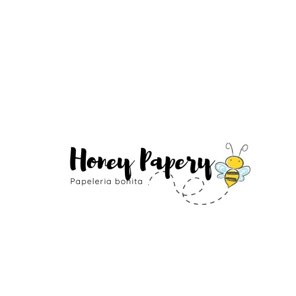
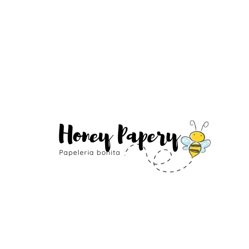

Información personal


Soy Jose Ruben Arias Gonzalez, estudiante de ingenieria en sistemas. Ante esta pandemia muchos negocios se han visto en la necesidad de crear paginas web para poder seguir en contacto con sus clientes y no cerrar. Ante esta problematica una papeleria llamada Honey Papery se interesa en abrir su propia pagina web en la que muestra todos sus productos, actualizaciones de ellos, tienda y noticias de la misma.
La pagina tendra las funciones de varios botones para poder navegar en toda la pagina, chat en linea, redes sociales, que ya existen y tienen ya una cantidad buena de clientes. Tambien podran moverse a una pagina web con conexion a sus redes sociales puede salir bien, ademas de poder identificar con una pagina web que con solo redes sociales lo hace ver de una manera mas profesional, mas seria. Todo esto podra mover y conocer nuevos clientes, ademas de una nueva manera de administrar cuentas.
Tambien se podria crear una sesion especial para poder llevar las estadisticas de venta, ingresos, listas que puedan ayudar a esta pequeña papeleria a poder moverse y extenderse, incluso a afueras de la ciudad dando envios al nivel nacional.
Para todo esto pondremos botones, extensiones y videos para poder llamar toda las atenciones posibles.